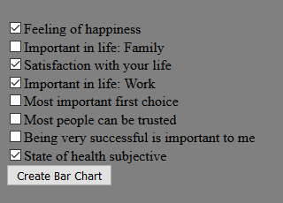
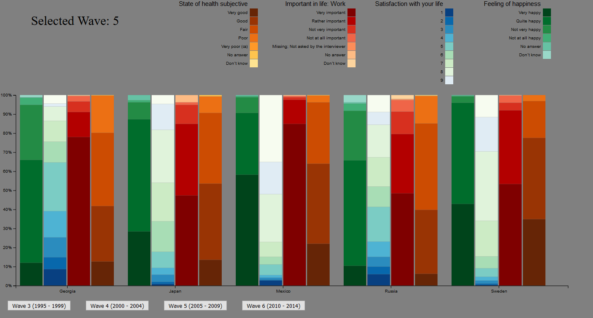

Analytic trail 1
My idea was to reasearch how citizens of different countries considered them selves happy or not and if happiness was correlated with some other variables. I found some variables that I though would correlate a bit with the happiness the citizens felt. In my visualization the user first selects the countries which are to be compared.

Then a set of variables are selected.
In the bar chart below we can compare the selected variables. If we start by comparing the bars for "Feeling of happiness" and "Satisfaction with your life" we see that they are correlated (which was not a big suprise).
